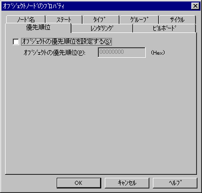
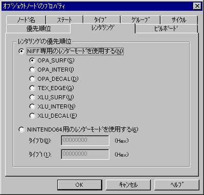
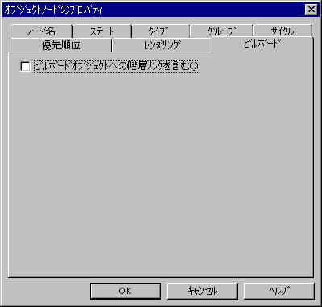

The following tabs are available in the Object node properties:
The "Node name" tab sets the name of the Object node.

The node name is displayed if the node is linked to the Name area. If it is not linked, then "Unknown" is displayed here. To change the node name, edit the node name that is displayed here. If you want to set a new node name for a node that is not linked to the Name area, simply delete "Unknown" and input the desired name. Conversely, if you want to delete the node name, simply delete the name that is displayed here.
The characters that can be used for node names are the ASCII characters "!" (0x21) to "~" (0x7e). Note that the name cannot contain a space nor any Japanese characters.
Use the "State" tab to specify the state of the object.

Select one of the following states for the object state:
Use the "Type" tab to specify the object type.

Select one of the following types for the object:
Use the "Group" tab to specify the object group number.

When you want to specify a group number because you have separated objects into groups according to type, check the "Set object group" box and then enter a hexadecimal value for the object group number.
Use the "Cycle" tab to specify the object rendering cycle.

Select one of the following for the rendering cycle of the object:
Use the "Priority" tab to specify the priority of the object.
If you want to specify the order of priority for objects of the same type, check the "Set object's priority" box and then enter a hexadecimal value for the object's priority.
Use the "Rendering" tab to specify the order of priority for rendering objects.
Select one of the following render modes for the rendering priority:
If "Use NIFF-dedicated render mode" is selected, you can specify any rendering priority and render type from OPA_SURF to XLU_DECAL. If "Use NINTENDO64 render mode" is selected, you can specify hexadecimal values in Type0 and Type1 for the NINTENDO64 rendering mode flags.
Use the "Billboard" tab to specify presence/absence of billboard objects.
When a billboard object is included in the low-level links of this object, place a checkmark in the "Include hierarchy link to billboard object" box.